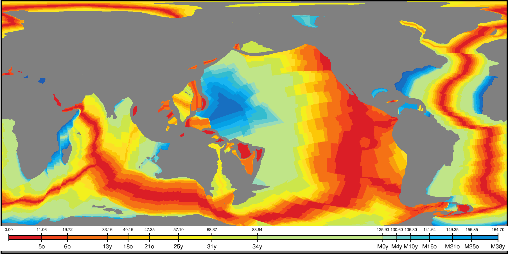

EarthByte Global Earth Seafloor Crustal Age
{kind=link}
{kind=link}

Numerous geodynamic and geophysical studies consider both the seafloor depth and the seafloor crustal age. EarthByte has pioneered the creation of crustal age grids since 1997 and we offer their latest version for remote use in GMT.
Usage
You access a global crustal age grid by specifying the special name
@earth_age[_rru[_reg]]
The following codes for rru and the optional reg are supported (dimensions are listed for pixel-registered grids; gridline-registered grids increment dimensions by one):
Code |
Dimensions |
Reg |
Size |
Description |
|---|---|---|---|---|
01d |
360 x 180 |
g,p |
125 KB |
1 arc degree global seafloor ages (1 min @ 111 km) |
30m |
720 x 360 |
g,p |
402 KB |
30 arc minute global seafloor ages (1 min @ 55 km) |
20m |
1080 x 540 |
g,p |
827 KB |
20 arc minute global seafloor ages (1 min @ 37 km) |
15m |
1440 x 720 |
g,p |
1.4 MB |
15 arc minute global seafloor ages (1 min @ 28 km) |
10m |
2160 x 1080 |
g,p |
2.9 MB |
10 arc minute global seafloor ages (1 min @ 18 km) |
06m |
3600 x 1800 |
g,p |
7.3 MB |
6 arc minute global seafloor ages (1 min @ 10 km) |
05m* |
4320 x 2160 |
g,p |
10 MB |
5 arc minute global seafloor ages (1 min @ 9 km) |
04m* |
5400 x 2700 |
g,p |
15 MB |
4 arc minute global seafloor ages (1 min @ 7.5 km) |
03m* |
7200 x 3600 |
g,p |
26 MB |
3 arc minute global seafloor ages (1 min @ 5.6 km) |
02m* |
10800 x 5400 |
g,p |
56 MB |
2 arc minute global seafloor ages (1 min @ 3.7 km) |
01m* |
21600 x 10800 |
g |
188 MB |
1 arc minute global seafloor ages (1 min original) |
See GMT remote dataset usage for when resolution codes are optional or required.
All of these data will, when downloaded, be placed in your ~/.gmt/server directory, with
the earth_age files being placed in an earth/earth_age sub-directory. If you do not
specify a CPT, the default CPT for this dataset (@earth_age.cpt) will be used.
Technical Information
We scale and reformat the original data to take up very little space so that downloads from the servers are as fast as possible. For the seafloor crustal age grid this means we chose 0.01 Myr as the smallest data unit, which is well below the uncertainties in the model. Data are scaled and shifted to fit in a short integer grid that is highly compressed by netCDF lossless compression and chunking. The data are reported in Myr relative to the 2012 Geological Time Scale.
Data References
Seton et al., 2020: [http://dx.doi.org/10.1029/2020GC009214].